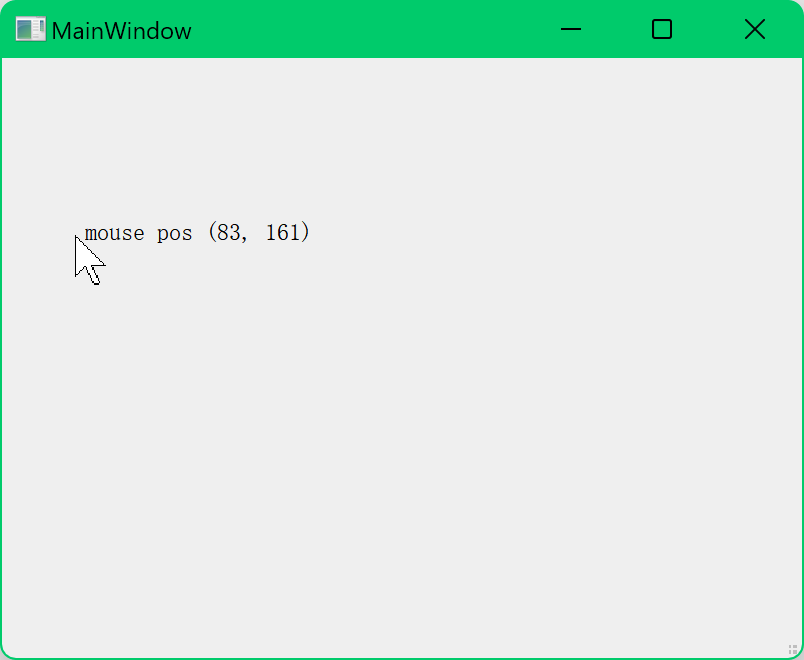

1. 环境搭建
学习 Qt C++ 的第一步是搭建开发环境。我选择使用 Qt Creator 作为 IDE，它提供了良好的支持和完整的开发工具链。
- 下载并安装 Qt 开发套件。
- 选择安装 Qt Creator IDE。
- 配置 C++ 编译器（如 MinGW 或 MSVC）以确保能够编译 C++ 代码。

Qt 是一个跨平台的 C++ 框架，它使得开发图形用户界面 (GUI) 变得非常简单。这里我分享我的 Qt C++ 入门学习经历，供大家参考。
这是我的入门Qt C++教程
学习 Qt C++ 的第一步是搭建开发环境。我选择使用 Qt Creator 作为 IDE，它提供了良好的支持和完整的开发工具链。
在搭建好环境后，我首先学习了 Qt 的基础知识。这包括理解信号与槽机制、事件驱动编程模型等。信号和槽是 Qt 特有的机制，用于处理组件之间的通信。
我通过以下资源学习这些基础概念：
在学习了一些基础知识后，我开始编写第一个 Qt GUI 应用程序。我的目标是创建一个简单的窗口应用程序，带有一个按钮，点击按钮后会显示一条信息。
在成功编写了第一个 GUI 应用程序后，我开始学习 Qt 中更高级的功能，如布局管理、QML、网络编程等。这让我更好地理解了 Qt 的强大之处，并能够开发复杂的桌面应用程序。
在成功编写了第一个qt+Opengl 应用程序后，开始编写界面，利用opengl3.3核心功能绘制图形
除了 Qt C++，我还学习了 Web 开发的基础知识。以下是我学习 Web 开发的一些重要步骤：
HTML（超文本标记语言）是构建网页的基础语言，而 CSS（层叠样式表）用于美化网页。学习 HTML 和 CSS 是任何 Web 开发者的第一步。
<div>, <h1>, <p> 等。参考资源：W3Schools
JavaScript 是网页编程的核心语言，它可以为网页添加交互功能。
参考资源：MDN JavaScript 文档
在掌握了基础的 HTML、CSS 和 JavaScript 之后，我开始学习一些流行的 Web 框架和库，如 Bootstrap 和 Vue.js。
这些工具帮助我更快地开发响应式和交互式网页。
Maven 是一个项目管理工具，广泛用于 Java 项目。通过 Maven，可以自动化管理项目依赖，构建项目，并进行测试和部署。
相关文档：Maven的学习文档
在学习完前端技术后，我开始深入了解后端开发。后端开发涉及服务器端逻辑、数据库管理和API的开发，常用的技术包括Node.js、Express、Spring Boot等。
嵌入式系统是一种软硬件高度结合的系统，广泛应用于智能设备、物联网、工业自动化等领域。以下是我在嵌入式系统开发方面的学习经历。
51单片机是一种经典的8位微控制器，适合初学者学习嵌入式系统的基础知识。我通过使用C语言进行开发，了解了单片机的工作原理以及硬件外设的控制方法。
相关文档：51单片机官方文档
STM32F103 是基于ARM Cortex-M3内核的微控制器，广泛应用于工业和消费类产品。我学习了如何在STM32CubeMX中进行外设配置，并使用STM32CubeIDE进行开发和调试。
相关文档：STM32F103 官方文档
STM32G431 是一款专为高性能应用设计的ARM Cortex-M4微控制器，支持更高效的浮点运算和更丰富的外设接口。我使用了FreeRTOS进行任务调度，并实现了多个任务的并行处理。
相关文档：STM32G431 官方文档
全志V3S是一款基于ARM Cortex-A7的Linux开发平台，常用于摄像头、物联网设备等应用。我通过在Linux环境中交叉编译和配置内核，学习了如何开发基于Linux的嵌入式应用。
相关文档：全志V3S 官方文档